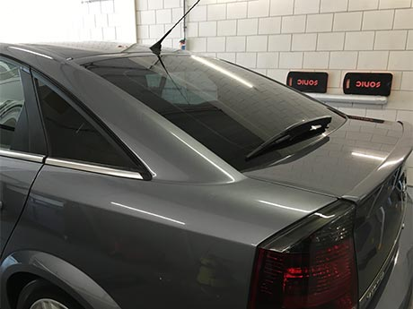

Het beste tintbedrijf voor uw autoramen!
- Levenslange garantie, alleen bij ons!
- De goedkoopste uit de regio, al vanaf € 169,-
- Klaar terwijl u wacht. (of een gratis leenauto)


-
Frans Weinbeck uit Rijswijk: “Ik heb nu van 3 auto’s de ruiten laten tinten en ik ben daar zeer tevreden over. Het is perfect gedaan en het was snel klaar. Ik voel me een tevreden klant bij Buitenbos Customs en daarom kan ik dit bedrijf aan iedereen aanraden!”
-
Fahad ibn Mansour uit Zoetermeer: “Ramen laten tinten: achterruit, twee zijruiten voor en achter. Tinten is erg goed en snel gedaan. Er is goed op maat gesneden en kwalitatieve folie gebruikt i.p.v. goedkoop spul. Met name de afwerking is erg goed, het lijkt nu fabriek-af”
-
Stefan Hoek uit Katwijk: “Zeer goed geholpen, nette prijzen en prijs informatie ook zeer duidelijk en snel antwoord op mijn vragen gehad”
-
Laurette ketting uit katwijk: “Ik heb mijn achterraam laten tinten en een grote schoonmaak laten doen door Buitenbos customs. Een echte aanrader! Snel klaar en weer een lekkere frisse auto! Bedankt mensen van Buitenbos Customs!”
- 